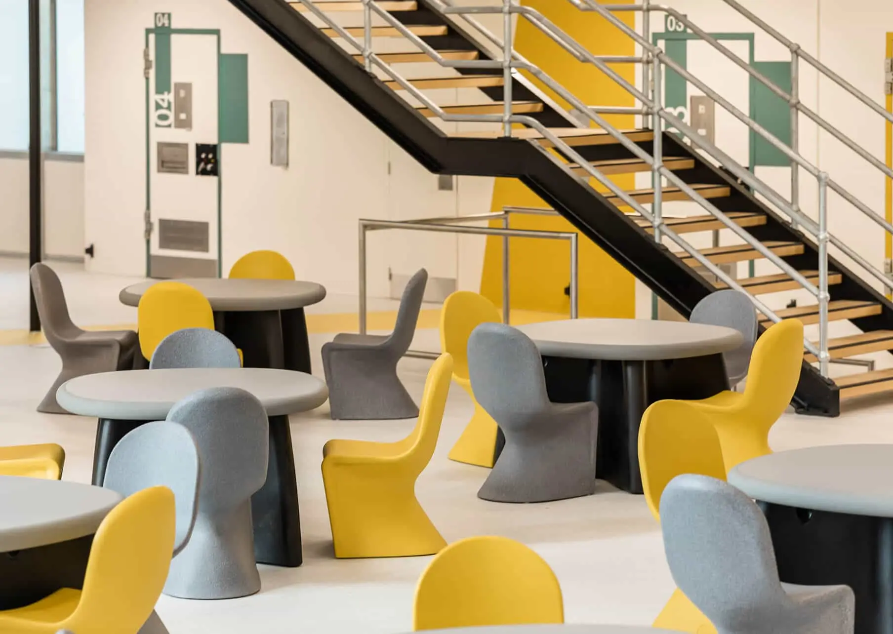
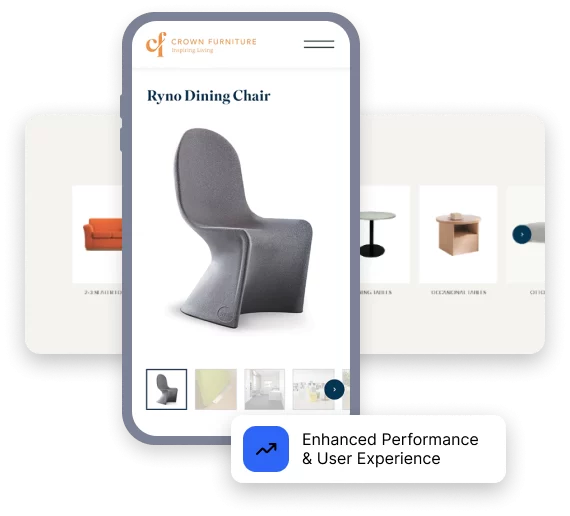
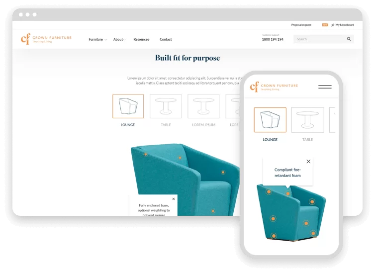

Crown Furniture
Creating a Digital Experience Fit for Royalty

Overview
Crown Furniture is an Australian brand with a legacy built on quality and craftsmanship. They were looking for a website makeover to reflect their prestigious brand and help them streamline their marketing strategy.
.png)

Key Challenges
The furniture industry is highly competitive, and Crown Furniture’s website was threatening to knock them off the throne. Slow-loading pages and unresponsive design created a poor user experience, particularly on mobile. Meanwhile, a clunky backend left the marketing team frustrated and held back. In short, Crown Furniture needed a digital experience that was as refined as its products.
1. Outdated Brand Representation
The website didn’t accurately reflect the brand’s quality or showcase its valuable offerings.
2. Lack of Mobile Responsiveness
The website was not optimised for mobile or tablet devices, limiting accessibility.
3. Poor User Experience
Navigation was difficult, resulting in a frustrating user journey.
4. Slow Page Load Speeds
Pages scored below 50 on desktop and mobile, hurting user retention and engagement.
5. Limited Backend Functionality
The backend was cumbersome, making it challenging for the marketing team to implement campaign changes effectively.
Our Solutions & Process
We knew we had to dig deep to create a website that truly reflected the premium quality Crown Furniture was known for. The stakes were high—without a refined digital presence, they risked losing out to the rising competition in their market. We needed to showcase their craftsmanship and empower their marketing team with an intuitive, functional and highly efficient website backend.
1. Conversion-Focused Website Rebuild
We began by thoroughly understanding Crown Furniture’s business goals, audience, and desired user experience:
> Partnered with a branding expert to align the website with Crown Furniture’s core values.
> Developed custom UI/UX mockups that embodied the updated branding — resulting in a professional, modern, and user-friendly site.
> Improved the navigation to make it more intuitive, leading to a seamless user journey.
> Created a ‘search feature’ and a ‘personalised moodboard’ that allowed users to explore, save, and share furniture collections—supporting design ideas and boosting engagement.
> Introduced engaging product videos to capture viewer interest, provide detailed information, and drive engagement through clicks.
2. Enhanced Performance & User Experience
Without addressing the core performance issues, Crown Furniture could be missing valuable opportunities to convert visitors. We tackled these challenges head-on, helping improve key areas for both website visitors and their marketing team:
> Updated the entire backend system, simplifying maintenance and giving the marketing team more flexibility.
> Optimised site speed, achieving scores above 80 on desktop and mobile, greatly enhancing the overall experience.
3. Ongoing Collaboration & Support
We knew that building a great website was just the beginning. To ensure lasting success, we continued to work alongside Crown Furniture, providing the support needed to keep the website performing at its best:
> Implemented an ongoing care plan with regular maintenance to keep the website stable.
> Provided the marketing team with continuous support to help them adapt the site for campaigns and new initiatives

The Transformation
Crown Furniture transformed its outdated digital presence into a modern, high-performing platform that better represents its prestigious brand. Crown Furniture has a website showcasing its craftsmanship and empowering its marketing team to drive growth and adapt quickly. The improved user experience and ongoing support from have set them up for long-term success, ensuring they continue to lead in the commercial furniture industry.